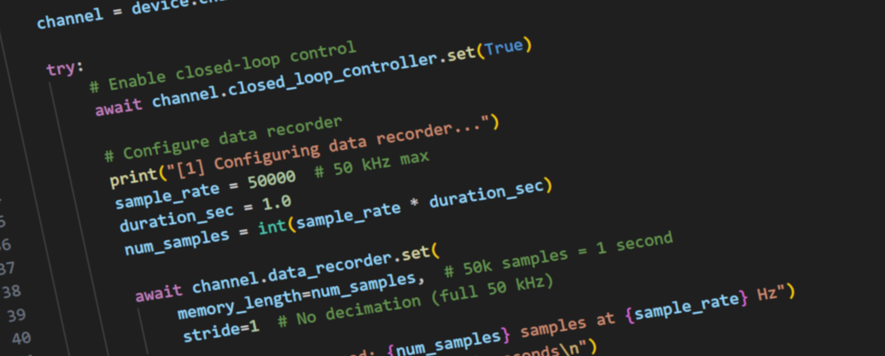

PsjLib C# Library Documentation

PsjLib is a comprehensive C# library for controlling piezoelectric amplifiers and control devices manufactured by piezosystem jena GmbH. The library provides an intuitive, asynchronous interface for precision position control, waveform generation, data acquisition, and advanced control system configuration.
Key Features:
- Asynchronous Architecture: Built on .NET async/await for efficient, non-blocking device communication
- Multi-Device Support: Extensible framework supporting d-Drive, 30DV50/300, and selected NV-series devices
- Comprehensive Capabilities: Full access to position control, PID tuning, waveform generation, data recording, and filtering
- Multiple Transport Protocols: Connect via Serial (USB) or Telnet (Ethernet)
- Type-Safe API: Complete type hints for excellent IDE autocomplete and type checking
- Extensive Documentation: Comprehensive docstrings, examples, and developer guides
Currently Supported Devices:
- d-Drive: Modular piezo amplifiers with 20-bit resolution, 50 kHz sampling, and advanced control features
- 30DV50/300: Single-channel, standalone amplifier
- NV40/3, NV40/3CLE: NV-series amplifiers with open-loop and closed-loop variants
Not currently supported:
- NV200D/NET: Please use nv200-python-lib for NV200D/NET devices
Quick Start:
using PsjLib.DDriveFamily;
using PsjLib.Transport;
var device = new DDriveDevice(TransportType.Serial, "COM3");
await device.ConnectAsync().ConfigureAwait(false);
try
{
var channel = device.Channels[0];
await channel.ClosedLoopController.SetAsync(true).ConfigureAwait(false);
await channel.Setpoint.SetAsync(50.0).ConfigureAwait(false);
var position = await channel.Position.GetAsync().ConfigureAwait(false);
Console.WriteLine($"Position: {position:F2} µm");
}
finally
{
await device.CloseAsync().ConfigureAwait(false);
}